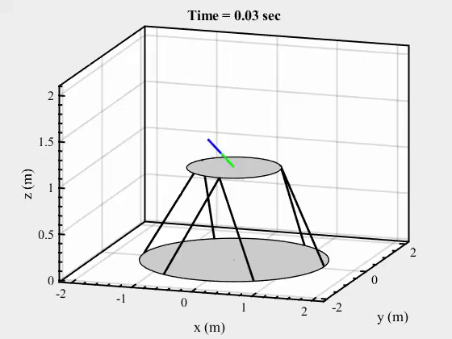
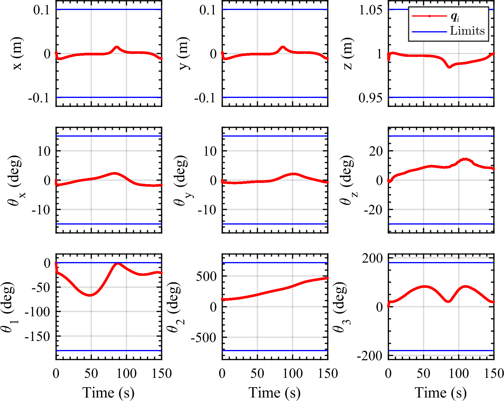

This project focuses on developing a ground-based spacecraft simulator for hardware-in-the-loop simulations
of on-orbit servicing missions.
Issues & Challenges
Ensure high precision.
Develop a low-cost solution.
Demonstrate a wide range of motion.
Avoid singularity issues.
Approaches & Results
Approach 1: Hybrid manipulator-based ground robotic platform for orbital motion emulation.
It tracks a scaled-down orbital trajectory using a closed-loop inverse kinematics (CLIK) controller
offering robustness against singularities and joint limits. [JAIS 2022], [ASC 2021]


Tracking the desired orbital trajectory while maintaining joint limit constraints.
Approach 2: Emulating In-Space Servicing, Assembly, and Manufacturing (ISAM) missions with a 12-DOF
Hardware-in-the-loop robotic testbed.
The system offers inherent modularity, allowing multiple use cases to emulate ISAM missions.
Scenario 1: This configuration significantly enhances motion capabilities, particularly in translation
and rotation, due to the system’s inherent kinematic redundancy. [ASC 2023]
Scenario 2: Such a configuration is particularly valuable for testing control methods for traditional
serial-link robotic arms in space missions, where the hexapod replicates 6 DOF satellite motion. [SFMM
2025]
Experimental Analysis of an ISAM Mission to dock with a tumbling target satellite.